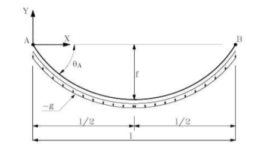

It is written in [1] that the horizontal force $H_0$ is given by the equation:
$$y(l/2) = -f$$
This translates into (using the catenary curve) :
$$ -f = \frac{H_0}{g}\left [ 1 - \cosh\left(\frac{gl}{2H_0}\right)\right] \;\;\;(1)$$
Where $f$, $g$ and $l$ are known variables. Of course, there is no closed form solution of $H_0$, but using a simple approximation perhaps we can find a formula for it.
Note that the Taylor expansion of $\cosh$ is :
$$\cosh(x) = 1 + \frac{x^2}{2!} + \frac{x^4}{4!} + \dots = \sum_{n=0}^{\infty} \frac{x^{2n}}{(2n)!}$$
From (1) and the second order approximation of $\cosh$ we get that:
$$ -f \simeq \frac{H_0}{g}\left [ 1 - \left( 1 + \frac{1}{2}\left( \frac{gl}{2H_0}\right )^2 \right )\right ]$$
$$ -f \simeq -\frac{gl^2}{8H_0}$$
$$H_0 \simeq \frac{gl^2}{8f} \;\;\; (2)$$
Substituting the known values for the ones in [1] we get, $f = 4$, $l = 40$ and $g = 3.2$.
$$ H_0 \simeq \frac{3.2 \times 40^2}{8 \times 4} = 160 $$
Which is pretty close to the value found by trial and error $\hat{H_0} = 162$, only $\frac{|H_0 - \hat{H_0}|}{\hat{H_0}} = 0.0125$ relative error, which is close to 1% error.
To improve accuracy, we could add higher order terms into the approximation, but that would lead to horrible formulae (4th order) or impossible solution analytically (6th order). Note that $\cosh$ Taylor approximation has only even degree approximations.

I conjecture that it is possible improve the estimate in this case by using a second order Taylor expansion in a different place. The argument goes as following, as seen in Fig.1 we only care about the catenary in a finite interval. Also the approximation we used is a Taylor expansion around zero which approximates the function near zero, hence as $\frac{gl}{2H_0}$ gets bigger the worst the approximation gets. I have tried to do that but the result was so messy that I give up.
There is also the numeric approach. By formalizing this problem as an optimization problem $H_0$ can be found as : $$ \min_{H_0} C(H_0) = \min_{H_0}\left(f + \frac{H_0}{g}\left [ 1 - \cosh\left(\frac{gl}{2H_0}\right)\right]\right)^2 \;\;\; (3)$$ This optimization problem can be solved by doing a gradient descend that start with our best guess (2). This translates into the following algorithm: $$H_0^{(t+1)} = H_0^{(t)} - dt \frac{dC}{dH_0}\left (H_0^{(t)}\right)$$ $$H_0^{(0)} = \frac{gl^2}{8f}$$ $$\frac{dC}{dH_0}(H_0) = 2\left(f + \frac{H_0}{g}\left [ 1 - \cosh\left(\frac{gl}{2H_0}\right)\right]\right)\left(\frac{1}{g}\left [ 1 - \cosh\left(\frac{gl}{2H_0}\right)\right] + \frac{H_0}{g}\left[\sinh\left(\frac{gl}{2H_0}\right)\frac{gl}{2H_0^2} \right ] \right )$$
Fig.1 - geometry of the problem
I conjecture that it is possible improve the estimate in this case by using a second order Taylor expansion in a different place. The argument goes as following, as seen in Fig.1 we only care about the catenary in a finite interval. Also the approximation we used is a Taylor expansion around zero which approximates the function near zero, hence as $\frac{gl}{2H_0}$ gets bigger the worst the approximation gets. I have tried to do that but the result was so messy that I give up.
There is also the numeric approach. By formalizing this problem as an optimization problem $H_0$ can be found as : $$ \min_{H_0} C(H_0) = \min_{H_0}\left(f + \frac{H_0}{g}\left [ 1 - \cosh\left(\frac{gl}{2H_0}\right)\right]\right)^2 \;\;\; (3)$$ This optimization problem can be solved by doing a gradient descend that start with our best guess (2). This translates into the following algorithm: $$H_0^{(t+1)} = H_0^{(t)} - dt \frac{dC}{dH_0}\left (H_0^{(t)}\right)$$ $$H_0^{(0)} = \frac{gl^2}{8f}$$ $$\frac{dC}{dH_0}(H_0) = 2\left(f + \frac{H_0}{g}\left [ 1 - \cosh\left(\frac{gl}{2H_0}\right)\right]\right)\left(\frac{1}{g}\left [ 1 - \cosh\left(\frac{gl}{2H_0}\right)\right] + \frac{H_0}{g}\left[\sinh\left(\frac{gl}{2H_0}\right)\frac{gl}{2H_0^2} \right ] \right )$$
Below a simple implementation of the algorithm was built:
$f = $ , $l = $ and $g = $
$C =$ and $H_0 = $